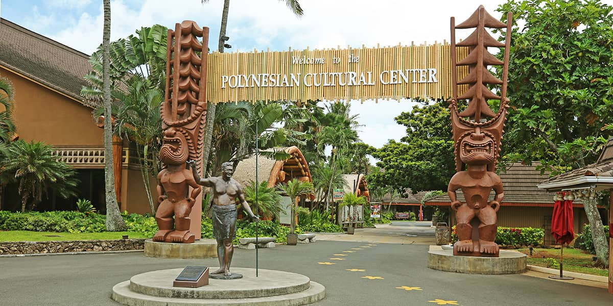

Website
Facebook
Youtube Page
POLYNESIAN CULTURE CENTER
WHAT TO DO
Island Villages & Activities
Ali'i Luau
Ha: Breath of Life show
Circle Island Tour
Hukilau Marketplace

Courtesy of the
Polynesian Culture Center